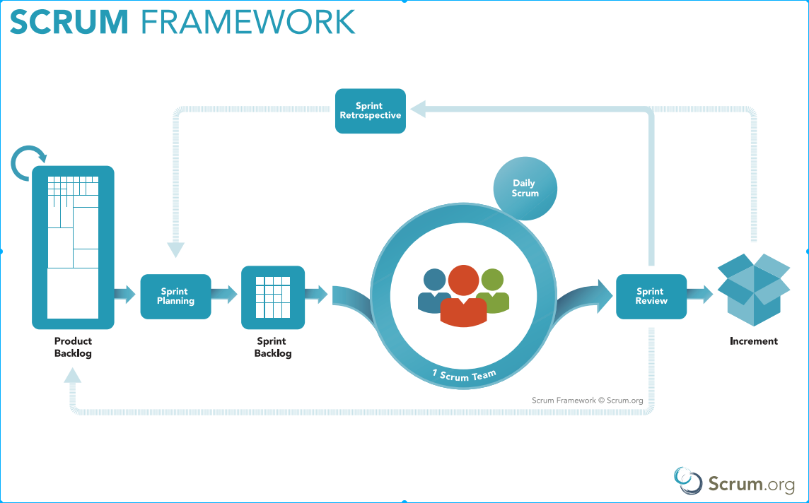

A framework within which people can address complex adaptive problems, while productively and creatively delivering products of the highest possible value.
Scrum is:
It that has been used to manage work on complex products. Scrum is not a process, technique, or definitive method. Rather, it is a
framework within which you can employ various processes and techniques..
Scrum has been using to delivere software in some company due to the facility to manager changes and scope
Is important framework in software development process.
Click here, to know more about Scrum...
Scrum has some step to folow. However, is hard to folow, look at the image above all pieces are a litle step
I will encorage you to learn more about it. Here some link that you can check:
If you think that I could add value to you network, pelase contact me at my email